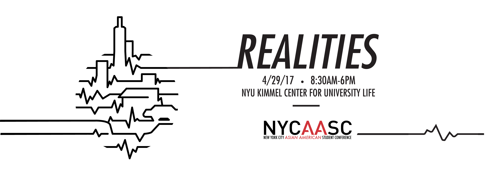

The Eleventh Annual NYCAASC: REALITIES
2016 was an extremely divisive year - it revealed how little we truly know of our neighbors, even in New York City.
Our city is segregated by our various identities, like race and class. Although we share a single city border, we hardly know our neighbors beyond appearances and preconceived notions.
This year’s conference will explore the theme of REALITIES -- By delving into the experiences, histories, and communities of our families and neighbors, NYCAASC 2017 aims to identify and question the power structures that shape our realities.
- What determines our realities?
- Which realities are considered “authentic”?
- And most importantly, whose realities become history?
Through the power of communal storytelling, REALITIES invites attendees to challenge our perceived realities of one another and to mobilize our communities beyond borders.
Speakers and workshop information will be released in April, so stay tuned!